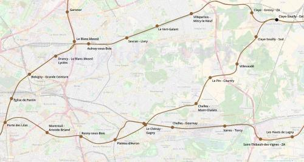

RER G Claye-Souilly
RER G Claye-Souilly
Porte des Lilas - Claye-Souilly
Création de la ligne G du RER.
Cette branche du RER G a vocation à améliorer la desserte de l'extrême-est de la Seine-Saint-Denis qui dispose pour le moment d'un accès médiocre aux transports ferrés. En correspondance avec les tangentielles Val-d'Oise et Seine-et-Marne à Claye-Souilly, elle ouvrira un nouvel itinéraire pour se rendre à l'aéroport de Roissy depuis le sud de la Seine-Saint-denis ou l'est du Val-de-Marne (via la tangentielle Val-de-Marne et une correspondance à Plateau d'Avron ou le Chénay - Gagny).
Voir les autres projets associés à cette ligne
Carte

Cliquer pour agrandir
Stations
Si ce projet vous intéresse n'hésitez pas à le (re-)partagez sur les réseaux sociaux ou par courriel ou à en parler autour de vous.
Si vous souhaitez travailler à la concrétisation de ce projet, passez à l'action et contactez nous.
Commenter